References and Inspirations
A collection of some of my favourite project works/practices/references. Collected here to share with you and for my future self.
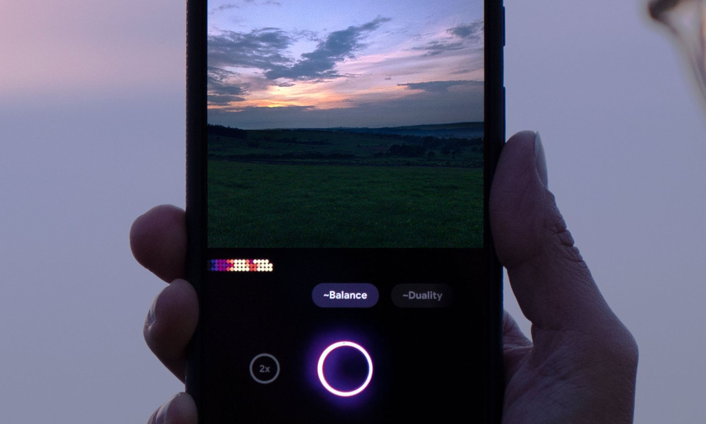
CAV Camera
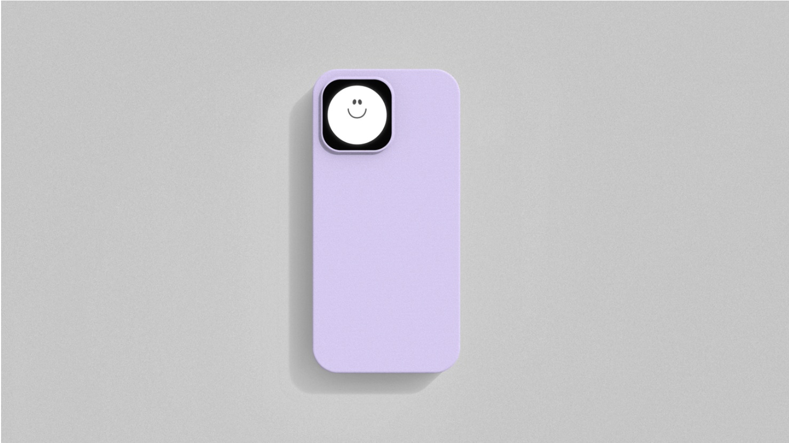
Aperture
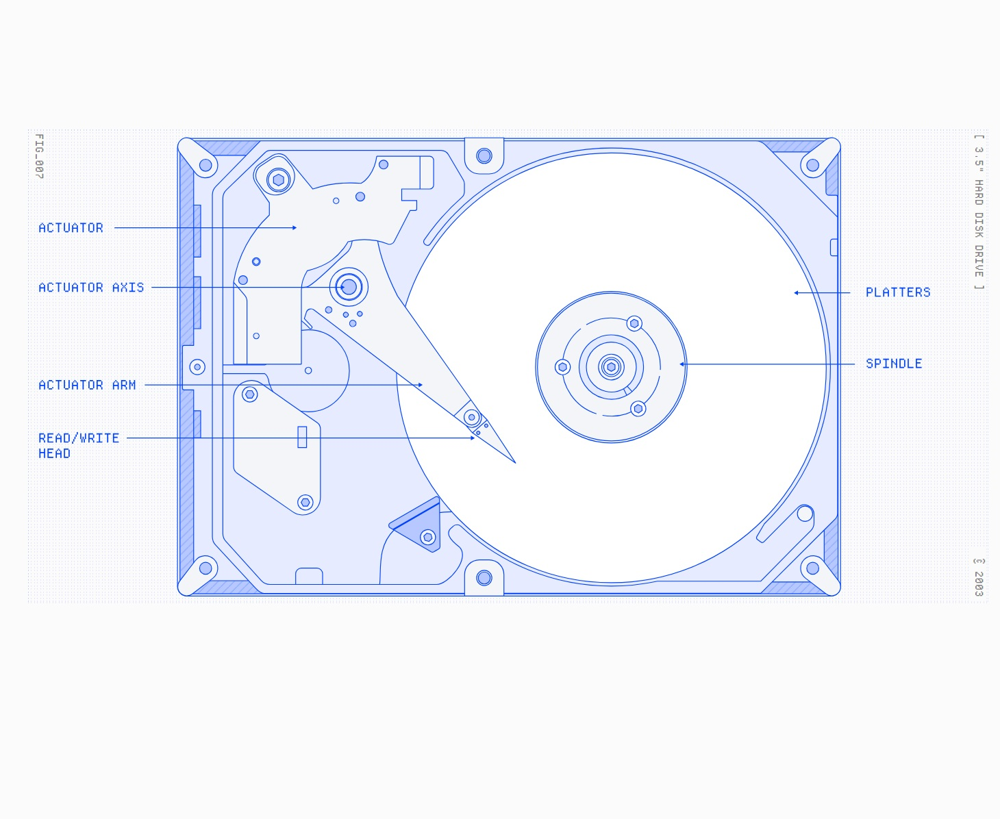
Makingsoftware.com
Third Nature
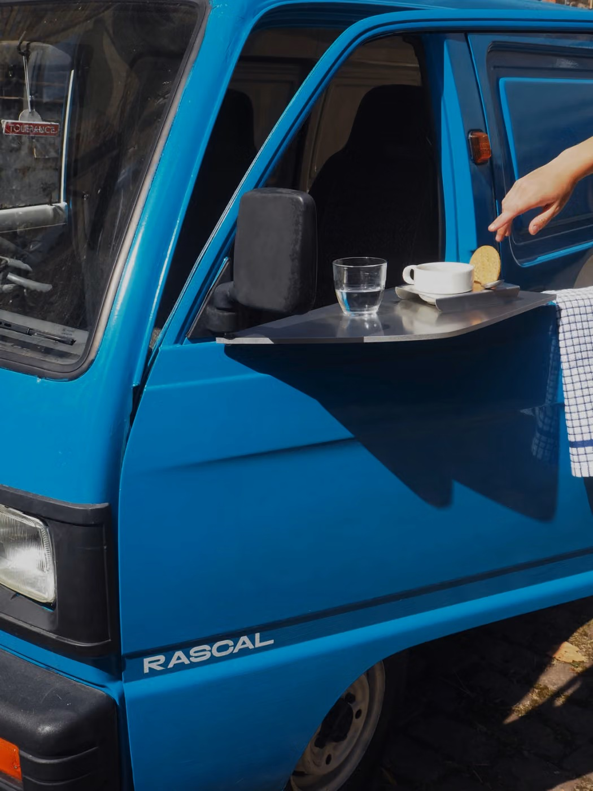
Cafe Tolerance
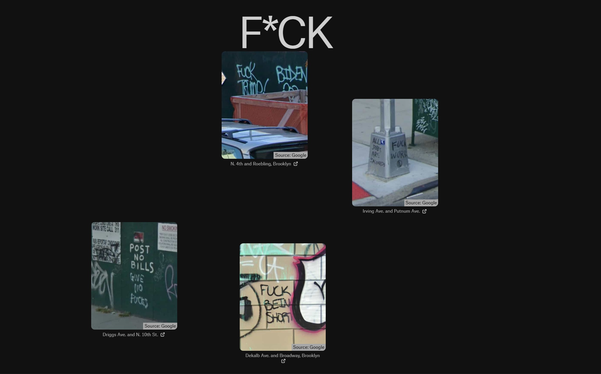
All Text NYC
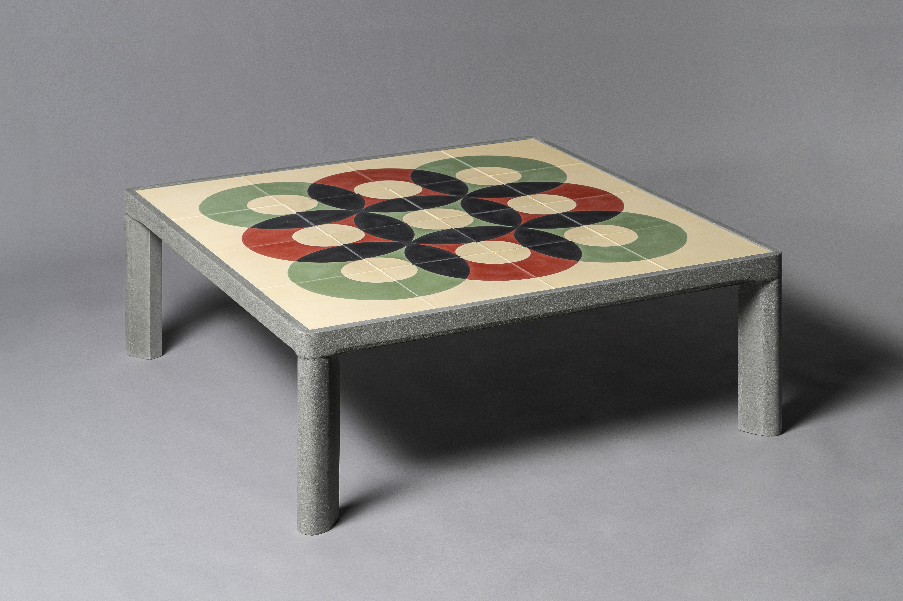
Huguet Coffee Table
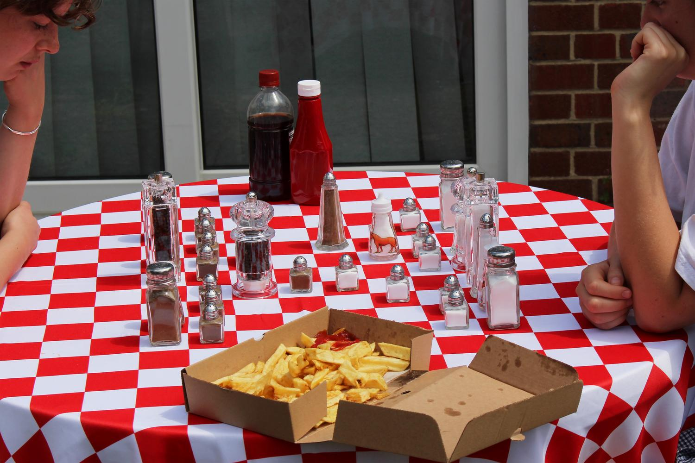
Doorknobs and Bath Plugs
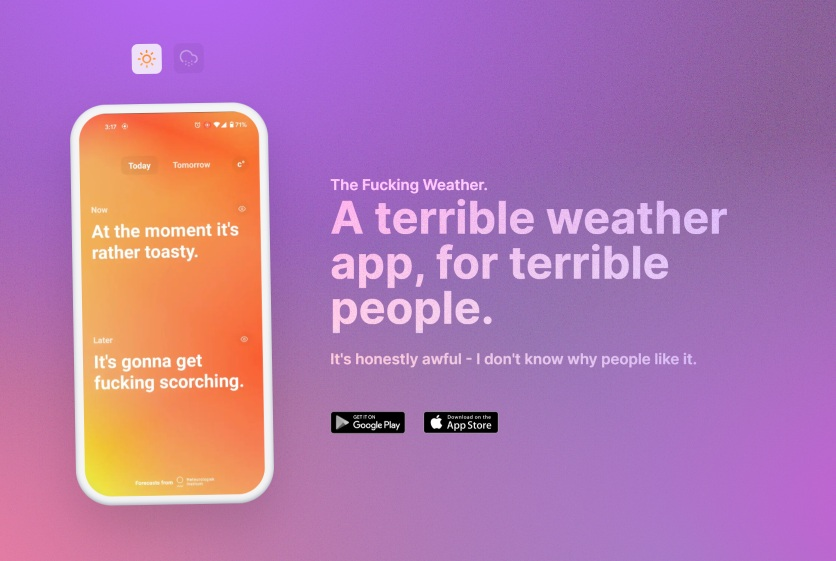
The Fucking Weather App
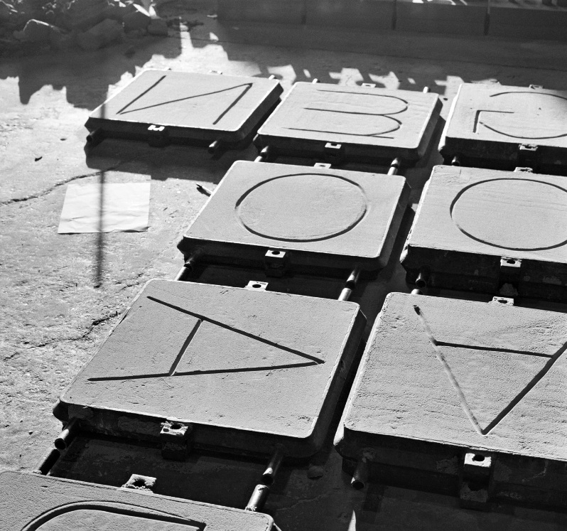
Assemble: Making Room
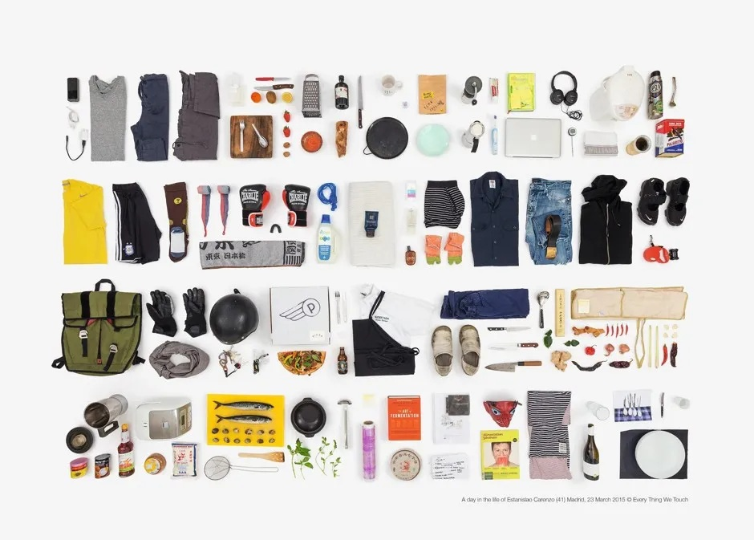
Everything We Touch
How Not To Be Seen A Fucking Didactic Educational .MOV File
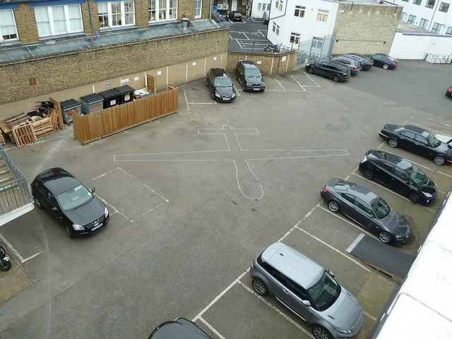
Drone Shadow 01
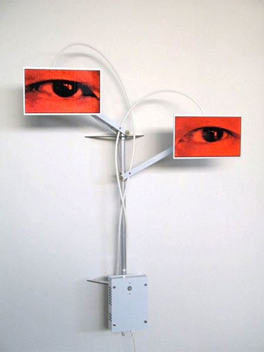
The Watcher VIII
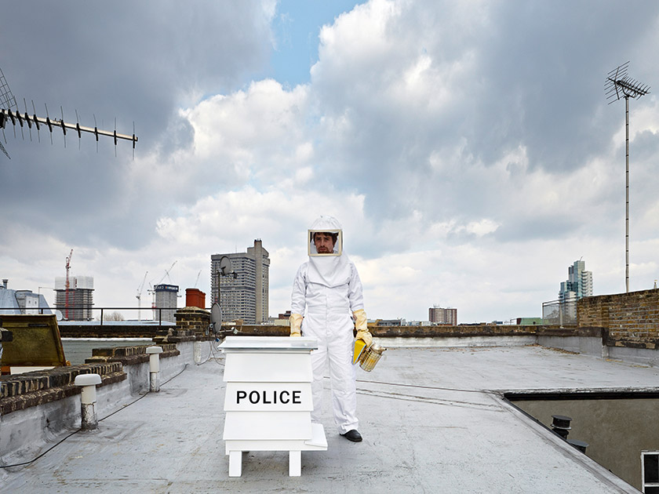
Policing Genes
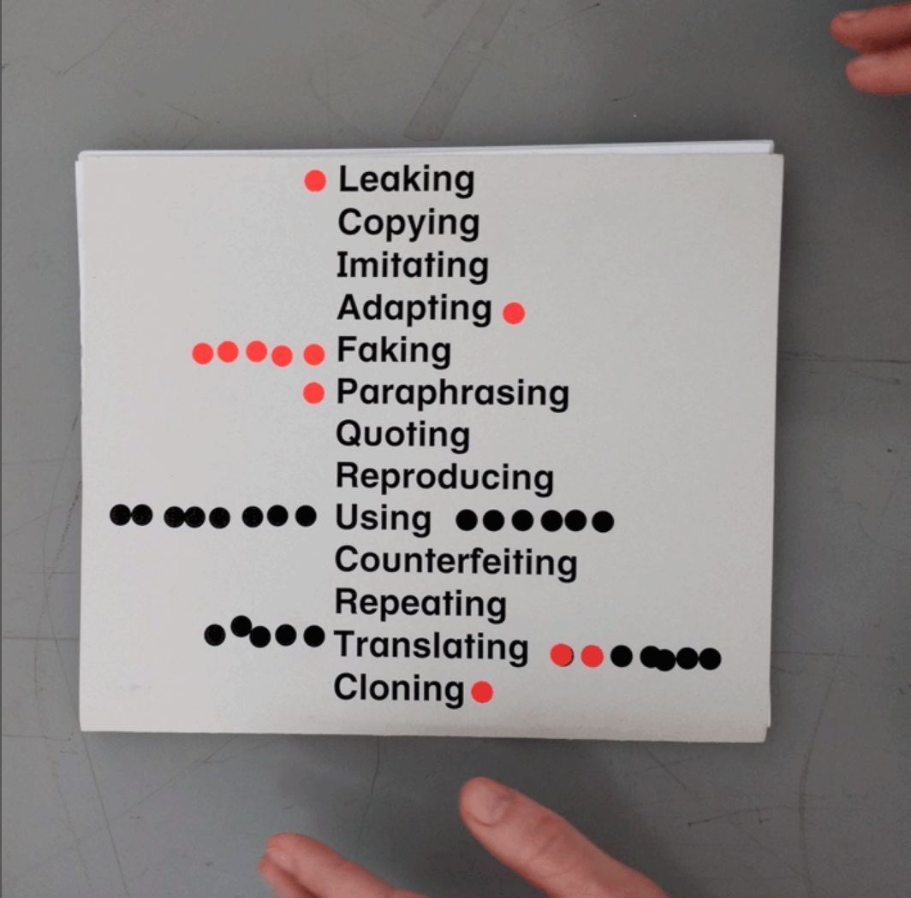
Piracy Project
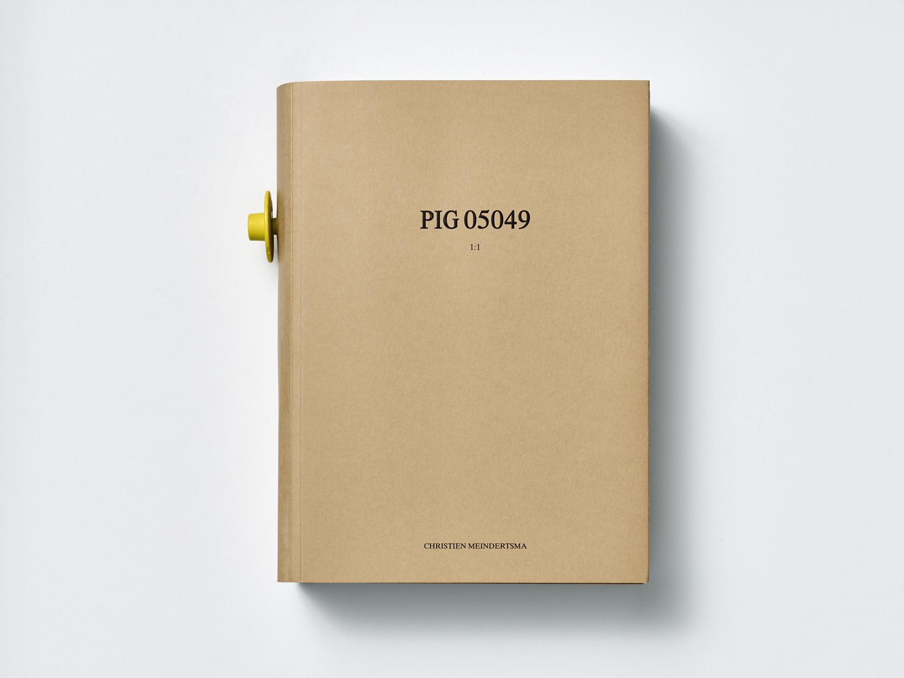
PIG-05049
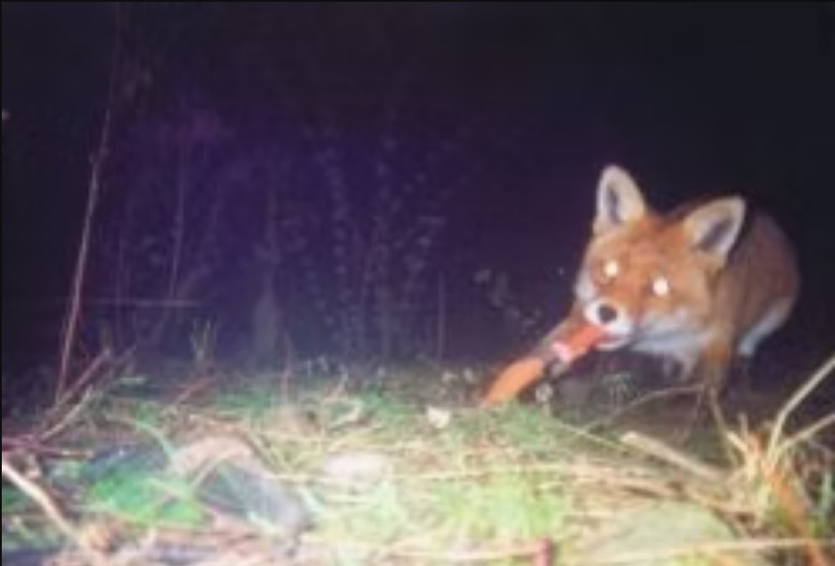
Daimlerstrasse 38